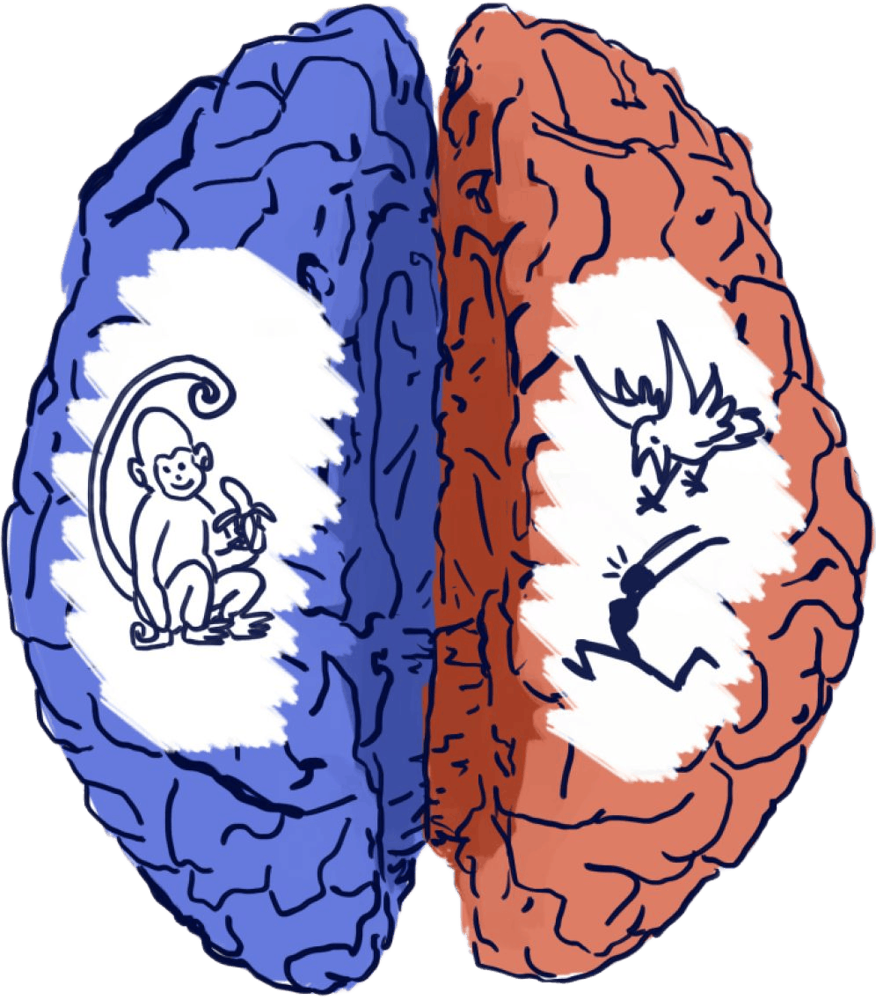
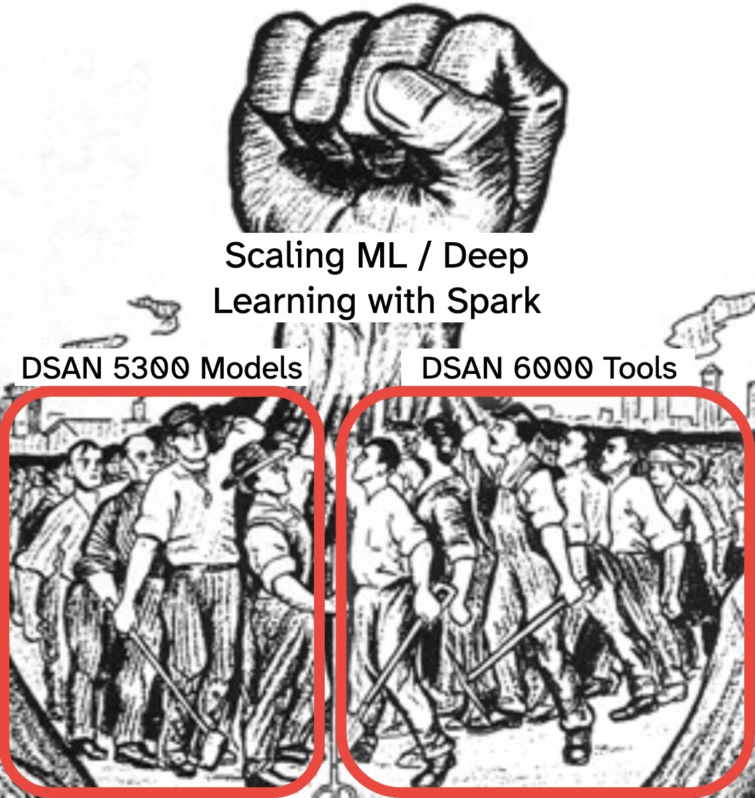
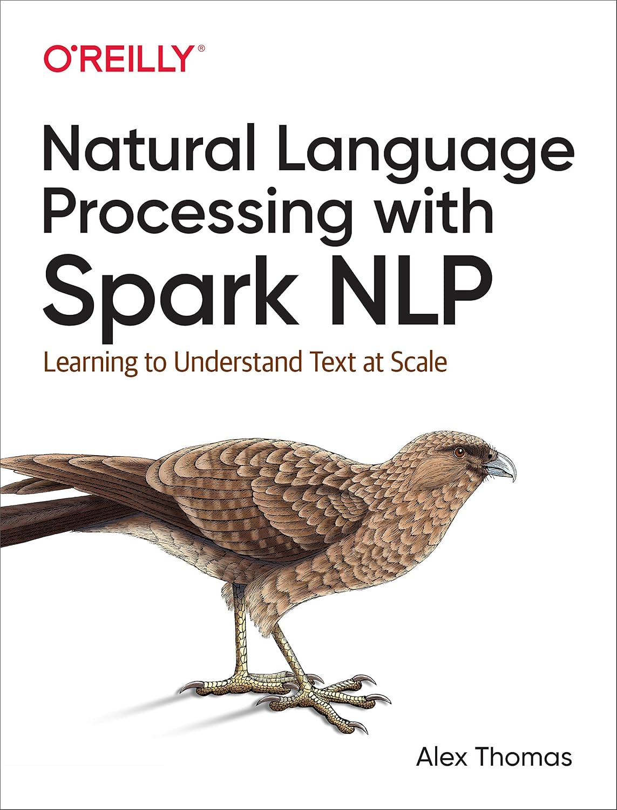

DSAN 6000: Big Data and Cloud Computing
Fall 2026
Monday, November 9, 2026
Just for this week and next week, we need to split our brains in half!
Class Material
This week (W10, Nov 9):
Next week (W11, Nov 16):

Final Project
This week (W10, Nov 9):
Next week (W11, Nov 16):
Combination of your skills > sum of its parts!

VectorAssemblerVectorAssembler does what we want!+--------------+---------+----------+--------+
| Country|Continent|Population| Sport|
+--------------+---------+----------+--------+
| Argentina| SA| 44| Soccer|
| Australia| Aus| 34| Cricket|
| Brazil| SA| 211| Soccer|
| Canada| NA| 36| Hockey|
| Cuba| NA| 11|Baseball|
| Germany| Eur| 80| Soccer|
| India| Asia| 1342| Cricket|
| Italy| Eur| 59| Soccer|
| Russia| Asia| 143| Hockey|
| Spain| Eur| 46| Soccer|
|United Kingdom| Eur| 65| Cricket|
| United States| NA| 326|Baseball|
+--------------+---------+----------+--------+from pyspark.ml.feature import VectorAssembler, StringIndexer, OneHotEncoder
from pyspark.ml.regression import DecisionTreeRegressor
sport_sdf = (
spark
.read
.option('header', 'true')
.schema('Country STRING, Continent STRING, Population INT, Sport STRING')
.csv("assets/country_sports.csv")
)
va = VectorAssembler(
inputCols=['Population'],
outputCol='features'
)
va.transform(sport_sdf).select('Country','features','Sport').show()+--------------+--------+--------+
| Country|features| Sport|
+--------------+--------+--------+
| Argentina| [44.0]| Soccer|
| Australia| [34.0]| Cricket|
| Brazil| [211.0]| Soccer|
| Canada| [36.0]| Hockey|
| Cuba| [11.0]|Baseball|
| Germany| [80.0]| Soccer|
| India|[1342.0]| Cricket|
| Italy| [59.0]| Soccer|
| Russia| [143.0]| Hockey|
| Spain| [46.0]| Soccer|
|United Kingdom| [65.0]| Cricket|
| United States| [326.0]|Baseball|
+--------------+--------+--------+(Example dataset is from Leskovec, Rajaraman, and Ullman (2014))
StringIndexer + OneHotEncoderStringIndexer
+--------------+---------+---------------+
| Country|Continent|Continent_Index|
+--------------+---------+---------------+
| Argentina| SA| 3.0|
| Australia| Aus| 4.0|
| Brazil| SA| 3.0|
| Canada| NA| 1.0|
| Cuba| NA| 1.0|
| Germany| Eur| 0.0|
| India| Asia| 2.0|
| Italy| Eur| 0.0|
| Russia| Asia| 2.0|
| Spain| Eur| 0.0|
|United Kingdom| Eur| 0.0|
| United States| NA| 1.0|
+--------------+---------+---------------+OneHotEncoder
from pyspark.ml.linalg import DenseVector
from pyspark.ml.functions import vector_to_array, array_to_vector
ohe = OneHotEncoder(
inputCols=['Continent_Index'],
outputCols=['Continent_OHE'],
)
fitted_ohe = ohe.fit(sport_ci_sdf)
sport_ohe_sdf = fitted_ohe.transform(sport_ci_sdf)
sport_dense_sdf = (
sport_ohe_sdf
.withColumn(
"Continent_Dense",
array_to_vector(
vector_to_array("Continent_OHE")
)
)
)
(
sport_dense_sdf
.select('Country','Continent_Index','Continent_OHE','Continent_Dense')
).show()+--------------+---------------+-------------+-----------------+
| Country|Continent_Index|Continent_OHE| Continent_Dense|
+--------------+---------------+-------------+-----------------+
| Argentina| 3.0|(4,[3],[1.0])|[0.0,0.0,0.0,1.0]|
| Australia| 4.0| (4,[],[])|[0.0,0.0,0.0,0.0]|
| Brazil| 3.0|(4,[3],[1.0])|[0.0,0.0,0.0,1.0]|
| Canada| 1.0|(4,[1],[1.0])|[0.0,1.0,0.0,0.0]|
| Cuba| 1.0|(4,[1],[1.0])|[0.0,1.0,0.0,0.0]|
| Germany| 0.0|(4,[0],[1.0])|[1.0,0.0,0.0,0.0]|
| India| 2.0|(4,[2],[1.0])|[0.0,0.0,1.0,0.0]|
| Italy| 0.0|(4,[0],[1.0])|[1.0,0.0,0.0,0.0]|
| Russia| 2.0|(4,[2],[1.0])|[0.0,0.0,1.0,0.0]|
| Spain| 0.0|(4,[0],[1.0])|[1.0,0.0,0.0,0.0]|
|United Kingdom| 0.0|(4,[0],[1.0])|[1.0,0.0,0.0,0.0]|
| United States| 1.0|(4,[1],[1.0])|[0.0,1.0,0.0,0.0]|
+--------------+---------------+-------------+-----------------+SparseVector if % non-zero is lowStringIndexer uses 0 for most common, 1 for next most common, etc.scikit-learn we’d be ready to go! In MLlib…spark.ml can’t use same algorithm as scikit-learn!java.lang.IllegalArgumentException: requirement failed: DecisionTree requires maxBins (= 32) to be at least as large as the number of values in each categorical feature, but categorical feature 3 has 36 values. Consider removing this and other categorical features with a large number of values, or add more training examples.scikit-learn has no maxBins parameterspark.ml does, and it’s important!64) can massively increase computation time for datasets with many categorical features(Many spark.ml algorithms also fail if # features p > 4096…)
MLlib: pyspark as normal:
Spark NLP: Custom SparkSession with sparknlp.start():

DSAN 6000 Week 10: Scalable ML with Spark